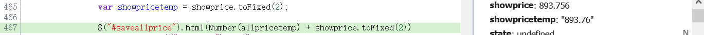
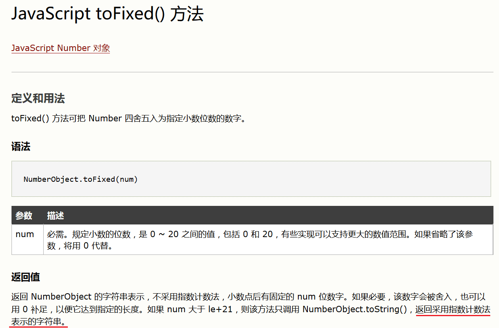

JavaScript toFixed() 方法
最近做的一个打折报价的项目，需要将原价乘以折扣保留两位小数从而算出最终价格。 于是便用到了JavaScript中的toFixed()方法。
原来我是这样写的：
$("#saveallprice").html(Number(allpricetemp)+showprice.toFixed(2))发现id为saveallprice的标签显示为空,而用alert()把这两个数打出来没问题。于是我就用Firebug调断点试试看：
发现toFixed()返回的是字符串！注意到"893.76"上的引号没？
后来我看了http://www.w3school.com.cn/jsref/jsref_tofixed.asp上 的说明：
尼玛坑爹啊！只能再用Number()转换成数字来计算了，这个函数设计得真是不友好！
JavaScript
2017-07-06